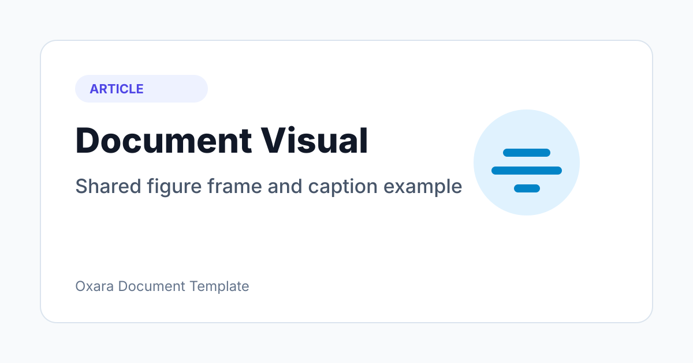

İçerik sistemi
Doküman Bileşenleri
Tipografi, başlık ritmi, tablolar, callout'lar, diyagramlar ve ortak içerik bileşenleri.
Base
base doküman sayfalarının görsel omurgasıdır. Diğer CSS dosyaları çoğunlukla buradaki tokenlara dayanır.
Callout'ları yalnızca okuyucunun kararını veya uygulamasını değiştiren kritik bilgi için kullanın. Aynı konu altında art arda kutu dizmeyin; örnekleri ve ilgili bağlantıları düz içerik olarak gösterin.
Kod
Çıktı
Örnek: Gerçek hayat senaryoları renkli kutu yerine bu daha sakin içerik biçimiyle anlatılır.
Temel Doküman Bileşenleri
Feature'lardan bağımsız olarak, bu doküman tipinde sık kullanılan temel HTML/CSS bileşenleri de base içinde gelir. Aşağıdaki örnekler sayfa yazarken en çok lazım olan parçaları gösterir.
Başlık hiyerarşisi
h2 ana bölüm, h3 alt bölüm, h4 detay başlık için kullanılır. Sidemenu ve search için başlıklara id vermek iyi alışkanlıktır.
Belge Akışı
Validasyon
İstek önce iş kurallarına göre doğrulanır.
Hata durumları
Eksik alan varsa süreç durur.
Section ayırıcıları
Ana konuların birbirinden net ayrılması için kapsayıcıya .section-dividers ekleyin. İlk section hariç doğrudan çocuk section'ların başına çizgi ve nefes alanı otomatik gelir.
Birinci konu
Birinci konu burada tamamlanır.
İkinci konu
Çizgiden sonra yeni konu başlar.
İçeriğe atlama bağlantısı
Klavye kullanıcılarının tekrarlanan navigasyonu geçip doğrudan ana içeriğe ulaşmasını sağlar. Normalde gizlidir ve Tab ile odaklandığında görünür.
Slogan banner
Kısa ve akılda kalıcı bir ana kuralı veya bölüm sonucunu öne çıkarmak için kullanın. Uzun açıklamalar ve uyarılar için callout tercih edin.
İçerik görseli
Ekran görüntüsü, fotoğraf ve dış kaynaklı görselleri semantik figure yapısıyla ekleyin. Standart görünüm resmi çerçeveler; dar görsellerde .is-compact, logo ve şeffaf görsellerde .is-unframed kullanılır.

.is-unframed kullanın.Tablo
Tabloları yatay taşma sorunlarına karşı her zaman .table-wrapper içine alın. Sütun adları okuyucunun hangi kararı vereceğini açıkça anlatmalı; boş “Kullan/Kullanma” sütunları veya emojiyle kodlanan anlam kullanılmamalıdır.
| Alan | Zorunluluk | Açıklama |
|---|---|---|
ExpenseVoucherTypeCode | Z | SATIS veya IADE |
UUId | O | Boşsa platform üretir |
Rowspan ile ortak kural
Bir kural birden fazla satırı kapsıyorsa boş hücreleri tekrar etmek yerine rowspan kullanın. Kural hücresindeki dikey çizgi, kapsanan satır grubunu görsel olarak ayırır.
| Alan | Değer | Kural |
|---|---|---|
| TypeCode | IADE | |
| SchemeId | PASAPORTNO | |
| ChannelCodeName | IADE_PROVIDER | Kargo → zorunlu |
| VerificationInfo.Type | IADEKODU | |
| CargoCompany | Dolu |
Ana ve ikincil butonlar
En önemli sonraki adım için ana butonu, destekleyen bağlantı için daha sakin ikincil butonu kullanabilirsiniz. İki butonda da metin sabit kalır. Her iki varyant aynı öncelik sistemini kullanır; renkleri farklıdır. Düz belge yüzeylerinde sakin, tek kenarlı ve dekorasyonsuz görünürler. Çerçeve/yaprak hareketi görsel arka planlı hero ve resimsel kart bağlamlarına ayrılır. Hover ve klavye odağı boyunca vurgu kalır; hareket azaltma tercihinde son görünüm anında uygulanır.
docs-primary-action ve docs-secondary-action temel stillerle gelir. Yeni bir sayfaya gitmek için a href, sayfa içi bir işlem için button type="button" kullanın. Dekoratif document-action-texture yalnız resimsel bağlamda görünür; erişilebilir ad gerçek metinden oluşur.
Kullanılabilirlik ve yardımcı eylemler
Bir işlem kullanılamıyorsa native disabled kullanın. Asenkron işlem sırasında görünen açıklamayı koruyup aria-busy="true" ekleyin; bu özellik tek başına tıklamayı engellemez. Bağlantılar navigasyon içindir: kullanılmayan bir hedefi devre dışı link olarak göstermeyin.
Kopyalama ve küçük araç işlemleri düşük vurgulu yardımcı eylemlerdir. document-utility-action aynı yardımcı görünümü sunar; işlem davranışı uygulamaya aittir. Kod ve tablo kopyalama bu ortak renk, focus ve geri bildirim kurallarını kullanır. Üçüncü bir güçlü CTA rengi gerekmez.
Icon-only sunum, boyut ve disabled/loading durumları görsel öncelikten bağımsızdır. Sekme, seçim, menü, açılır açıklama ve normal navigasyon kendi davranışlarını korur.
Çok hedefli kaynak kartı
Bir ürünün kaynak deposu ile NuGet, Marketplace veya canlı demo adresi farklıysa resource-card kullanın. Kartın tamamını tek adrese bağlamayın; her hedefi açık adıyla ayrı bağlantı olarak sunun. Varsayılan görünüm sade metin bağlantılarıdır. Aksiyonların daha belirgin olması gerektiğinde yalnız bağlantı alanına resource-card__links--buttons varyantını uygulayın; başlık ve etiketleri butona dönüştürmeyin. resource-card__action ve resource-card__action--primary, kaynak kartının özgün kompakt ikon/metin düzenini kullanır; yeni hero CTA sınıflarının takma adları değildir. Bu ailede özgün görünüm, bağımsız hedefler ve focus davranışı korunur.
Oxara.DocumentTemplate
Ortak dokümantasyon arayüzü ve feature sistemi.
Local Change Guard
Yerel ve commit edilebilir değişiklikleri ayırır.
Endpoint kartı
API referansı yazarken endpoint kartı kullanın. Method etiketi için method-post veya method-get class'ı ekleyin.
Yeni bir e-Gider Pusulası oluşturur.
Senaryo kartı
İş senaryolarını gruplamak için kullanılır. İçine tablo, callout veya kod bloğu koyabilirsiniz.
Kargo ile İade
Kargo iadede iade kodu ve kargo şirketi bilgisi zorunludur.
Açılır örnek bloğu
Uzun JSON/XML örneklerini sayfayı şişirmeden göstermek için details.example-details kullanın.
Örnek: SATIS request
Basit satın alma senaryosu.
{"ExpenseVoucherTypeCode":"SATIS"}Diagram wrapper
SVG diyagramlarını ortalamak ve responsive genişlik vermek için .diagram-wrapper kullanın. Diyagramın dışına ayrıca kart, çerçeve veya gölge eklenmez.
fill veya stroke kullanılmaz. Diyagramlar light ve dark temada aynı semantik tokenlarla çalışmalıdır.| Amaç | Token |
|---|---|
| Kart zemini ve kenarı | --svg-box, --svg-stroke |
| Ana ve yardımcı metin | --svg-text, --svg-muted |
| Bağlantı ve ok çizgisi | --svg-line |
| Brand / başarı / uyarı / hata | --svg-brand-s, --svg-ok-s, --svg-warn-s, --svg-err-s |
| Anlamsal renkli zemin | --svg-brand-bg, --svg-ok-bg, --svg-warn-bg, --svg-err-bg |